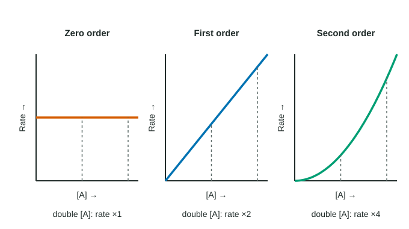

Topic 5.1 showed that a higher concentration usually speeds a reaction up. A rate law says by exactly how much. It is an equation, found by experiment, that links the rate to the concentration of each reactant.
The form of a rate law
For a reaction a A + b B → products, the rate law has the form
rate = k[A]m[B]n
- [A] and [B] are molar concentrations of reactants.
- m and n are the orders with respect to A and B. For this course they are 0, 1 or 2. The overall order is m + n.
- k is the rate constant. It is fixed for a given reaction at a given temperature. A higher temperature gives a larger k; changing a concentration does not change k.
The orders come from data, not from the balanced equation. The coefficients a and b tell you how much reacts overall. They do not tell you how the rate depends on each concentration. Sometimes the orders match the coefficients; often they do not.
What each order means

| Order in A | [A] doubles | [A] triples |
|---|---|---|
| 0 | rate × 1 (no change) | rate × 1 |
| 1 | rate × 2 | rate × 3 |
| 2 | rate × 4 | rate × 9 |
The pattern is: (factor the concentration changes by)order = factor the rate changes by. A zero-order reactant can still be used up; its concentration simply does not set the rate.
The method of initial rates
To find the orders, chemists run several trials that start with different concentrations and measure the rate at the very start of each, the initial rate. Then:
- Pick two trials where only one concentration changes.
- Find the factor that concentration changes by, and the factor the rate changes by.
- Solve (concentration factor)order = rate factor.
- Repeat for each reactant, then find k from any one trial.
Worked example: a rate law from initial-rate data
For 2 A + B → C at 30 °C:
| Trial | [A] (M) | [B] (M) | Initial rate (M/s) |
|---|---|---|---|
| 1 | 0.10 | 0.10 | 2.0 × 10⁻³ |
| 2 | 0.20 | 0.10 | 8.0 × 10⁻³ |
| 3 | 0.10 | 0.30 | 6.0 × 10⁻³ |
Order in A (trials 1 and 2, B constant): [A] × 2, rate × 4. 2m = 4, so m = 2.
Order in B (trials 1 and 3, A constant): [B] × 3, rate × 3. 3n = 3, so n = 1.
Rate law: rate = k[A]²[B]; overall third order.
k from trial 1: k = rate / ([A]²[B]) = (2.0 × 10⁻³ M/s) / ((0.10 M)²(0.10 M)) = (2.0 × 10⁻³ M/s) / (1.0 × 10⁻³ M³) = 2.0 M⁻² s⁻¹.
Check with trial 2: (2.0)(0.20)²(0.10) = 8.0 × 10⁻³ M/s, which matches.
Units of the rate constant
A rate is always in M/s, so k must have whatever units make the rate law come out in M/s. Divide M/s by M raised to the overall order:
| Overall order | Rate law example | Units of k |
|---|---|---|
| 0 | rate = k | M s⁻¹ |
| 1 | rate = k[A] | s⁻¹ |
| 2 | rate = k[A]² or k[A][B] | M⁻¹ s⁻¹ |
| 3 | rate = k[A]²[B] | M⁻² s⁻¹ |
The units of k are a quick way to read the overall order from a table of constants.
When two concentrations change at once
If a trial changes two concentrations, the rate factor is the product of both effects. Suppose rate = k[A]²[B] and both [A] and [B] double: the rate changes by 2² × 2 = 8. If you already know one order, you can use such a trial to find the other: divide out the known effect, and what is left belongs to the other reactant.